Credits
Photo credits.
Every photograph on this site comes from Wikimedia Commons and is used under its Creative Commons licence. Images were resized and cropped; they remain under the same licence.
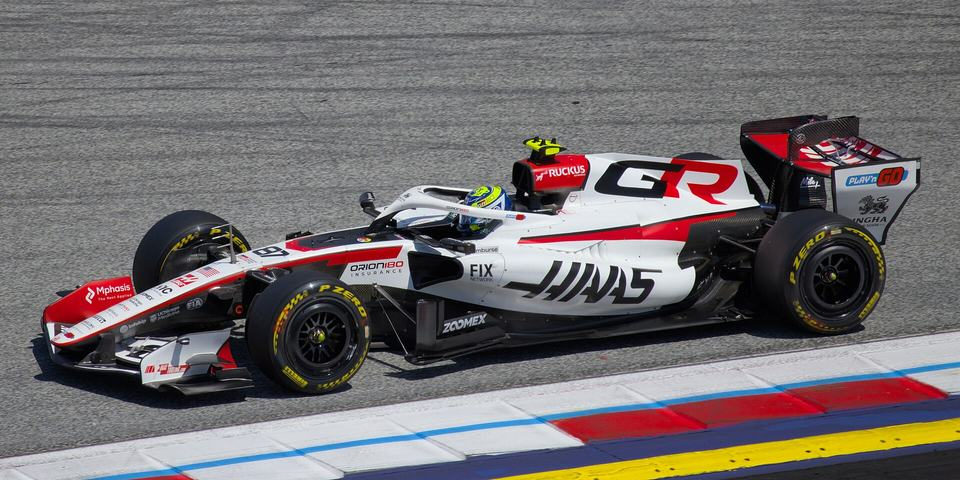
FIA F1 Austria 2026 Nr. 87 Bearman (1).jpg
Oliver Bearman’s Haas VF-26 at speed at the Red Bull Ring. Austrian GP 2026.
By Lukas Raich · CC BY-SA 4.0 · Original on Wikimedia Commons
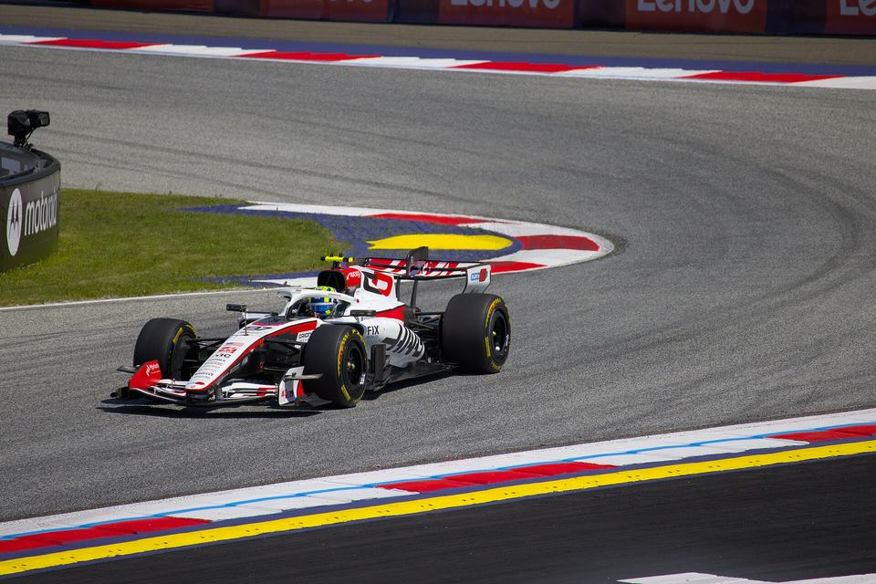
FIA F1 Austria 2026 Nr. 87 Bearman (2).jpg
Oliver Bearman’s Haas VF-26 rounding a corner at the Red Bull Ring. Austrian GP 2026.
By Lukas Raich · CC BY-SA 4.0 · Original on Wikimedia Commons
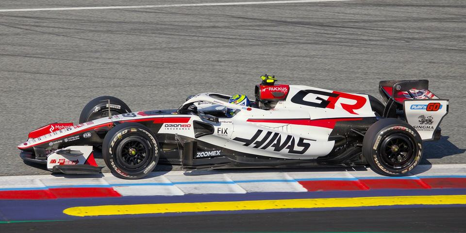
FIA F1 Austria 2026 Nr. 87 Bearman (3).jpg
Side view of Oliver Bearman’s Haas VF-26 on the kerb. Austrian GP 2026.
By Lukas Raich · CC BY-SA 4.0 · Original on Wikimedia Commons
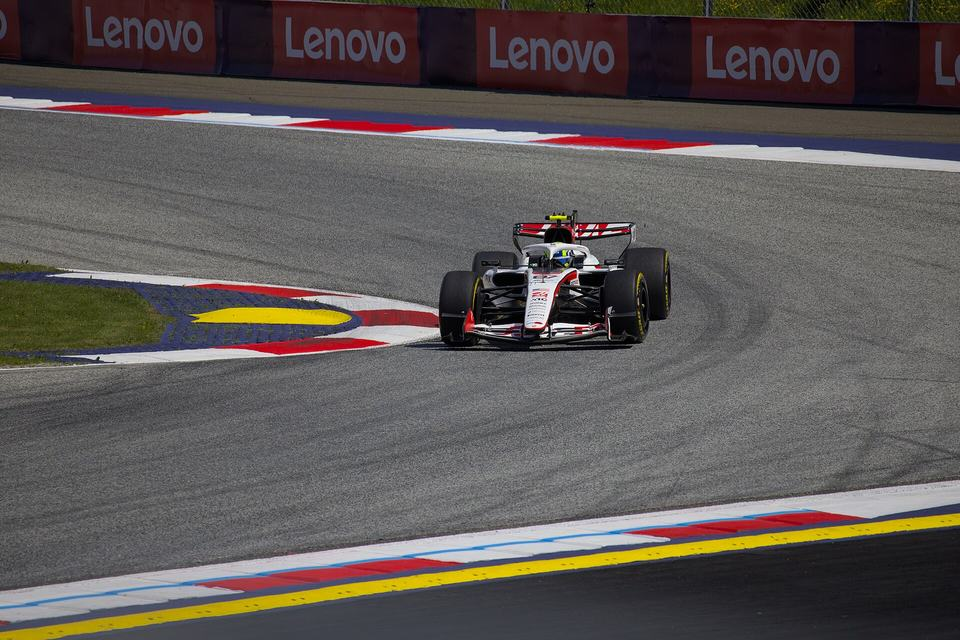
FIA F1 Austria 2026 Nr. 87 Bearman (4).jpg
Oliver Bearman’s Haas VF-26 seen head-on through a corner. Austrian GP 2026.
By Lukas Raich · CC BY-SA 4.0 · Original on Wikimedia Commons
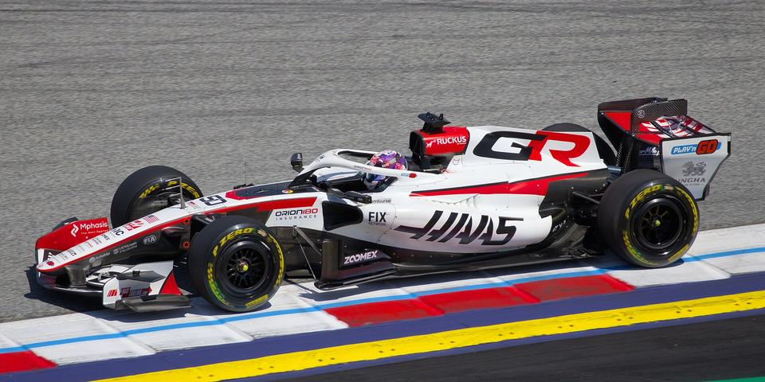
FIA F1 Austria 2026 Nr. 50 Hirakawa (1).jpg
Ryo Hirakawa driving the Haas VF-26 in practice at the Red Bull Ring. Austrian GP 2026 · FP1.
By Lukas Raich · CC BY-SA 4.0 · Original on Wikimedia Commons
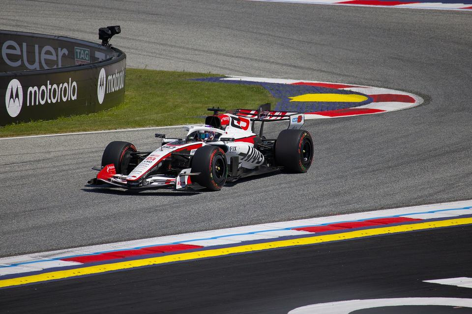
FIA F1 Austria 2026 Nr. 50 Hirakawa (2).jpg
Ryo Hirakawa’s Haas VF-26 turning in at the Red Bull Ring. Austrian GP 2026 · FP1.
By Lukas Raich · CC BY-SA 4.0 · Original on Wikimedia Commons
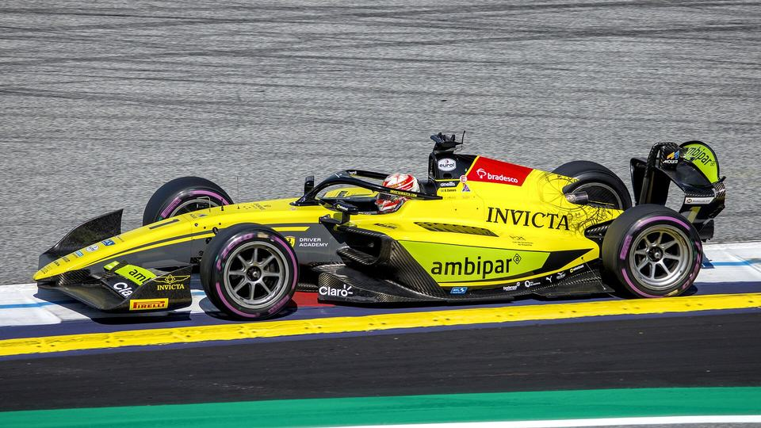
FIA F2 Austria 2026 Nr. 1 Câmara (1).jpg
Rafael Câmara in his Invicta Formula 2 car at the Red Bull Ring. FIA F2 · Austria 2026.
By Lukas Raich · CC BY-SA 4.0 · Original on Wikimedia Commons
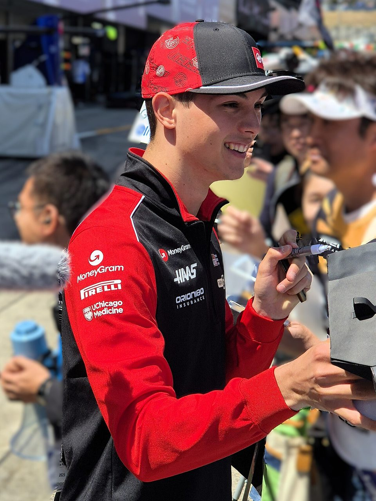
2025 Japan GP - Haas - Oliver Bearman - Thursday.jpg
Oliver Bearman in Haas team kit. Japanese GP 2025.
By Liauzh · CC BY-SA 4.0 · Original on Wikimedia Commons
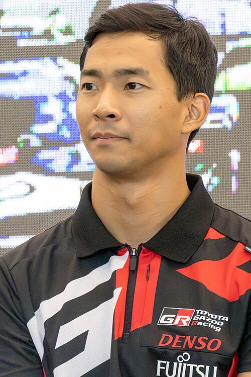
Ryo Hirakawa 2024 WEC Fuji 1.jpg
Ryo Hirakawa in Toyota Gazoo Racing team kit. WEC Fuji 2024.
By Morio · CC BY-SA 4.0 · Original on Wikimedia Commons

Rafael Câmara in 2022.jpg
Rafael Câmara, pictured in 2022. 2022.
By KVYTICAL · CC BY-SA 4.0 · Original on Wikimedia Commons
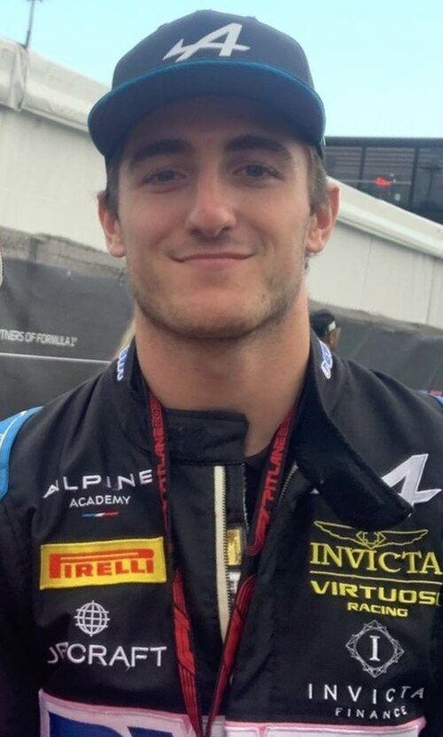
Jack Doohan 2023.jpg
Jack Doohan, pictured in 2023. 2023.
By Byxelized · CC0 · Original on Wikimedia Commons
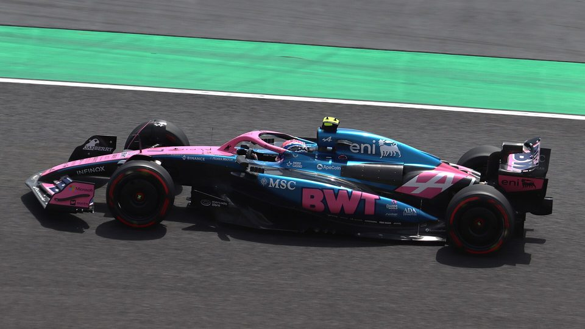
2025 Japan GP - Alpine - Jack Doohan - FP3.jpg
Jack Doohan driving for Alpine at the 2025 Japanese Grand Prix. Japanese GP 2025 · FP3.
By Liauzh · CC BY-SA 4.0 · Original on Wikimedia Commons
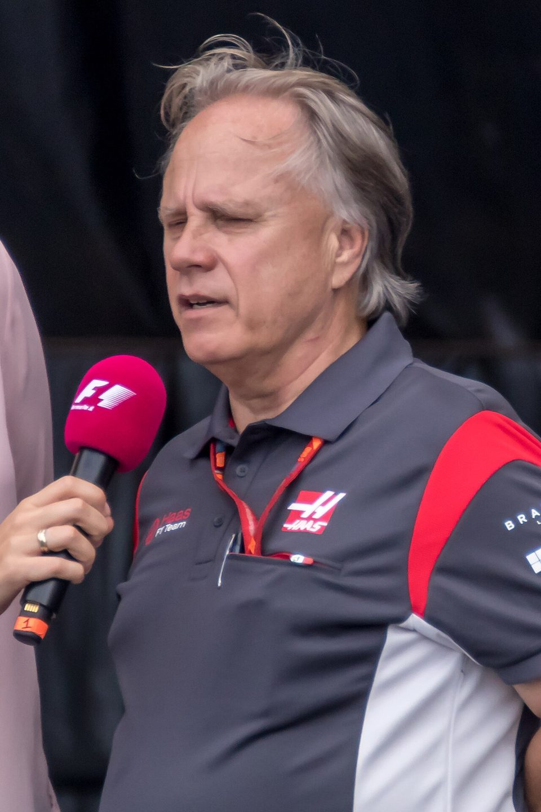
Gene Haas 2017 United States GP.jpg
Gene Haas at the 2017 United States Grand Prix. United States GP 2017.
By Steve from Austin, TX, USA · CC BY-SA 2.0 · Original on Wikimedia Commons
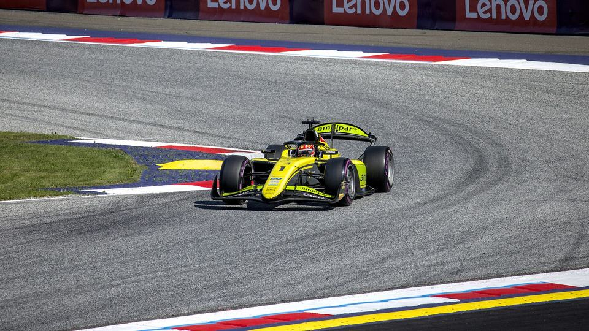
FIA F2 Austria 2026 Nr. 1 Câmara (2).jpg
Rafael Câmara’s Formula 2 car through a corner at the Red Bull Ring. FIA F2 · Austria 2026.
By Lukas Raich · CC BY-SA 4.0 · Original on Wikimedia Commons
.jpg){kind=link}
.jpg){kind=link}
.jpg){kind=link}
.jpg){kind=link}
.jpg){kind=link}
.jpg){kind=link}
.jpg){kind=link}


.jpg){kind=link}
Fonts: Archivo and JetBrains Mono (SIL Open Font License). 3D rendering: three.js (MIT). The 3D car is an original model built for this concept.